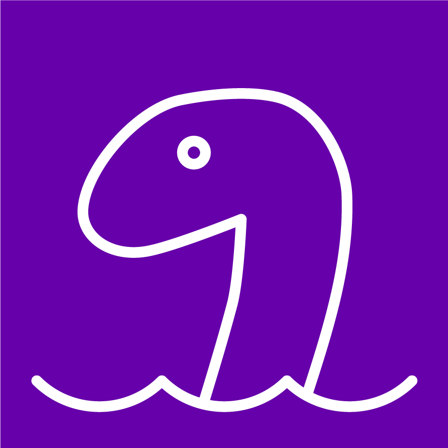

The hoax.ly chatbots
Using the hoaxlybot is rather easy, just go the url and start typing. If you say "Hi" to Nessie, you get some options to start with.
Nessie is the hoaxlybot avatar and here to help you, directly from Loch Ness!

Use the hoaxlybot directly in the web browser
The hoaxlybot is available under this domain: https://chat.hoax.ly.
Talk to Nessie via web browser!
No login necessary!
hoaxlybot on Telegram
hoaxlybot for Telegram: t.me/hoaxlybot
Just use your telegram app and open above url or create a conversation with @hoaxlybot.
By the way: There is also a Web-version available for Telegram: https://telegram.org/ You can find more about Telegram bots here: https://core.telegram.org/bots
hoaxlybot on Facebook
You want to ask Nessie questions on Facebook? No problem, Nessie will answer your questions directly on the hoaxly facebook page or use the Facebook messenger.
hoaxlybot for Slack
You can use hoaxlybot also in Slack! Currently there is no official Slack App, but when you have your own bot instance running, its just a matter of creating an app like documented here.